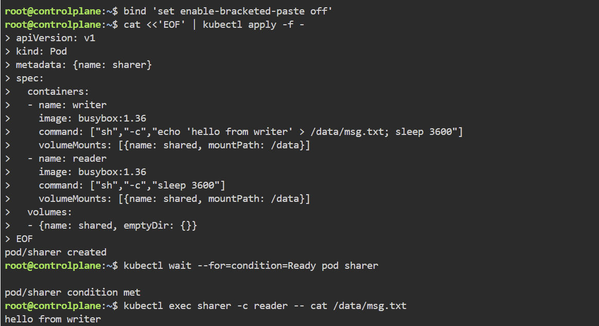
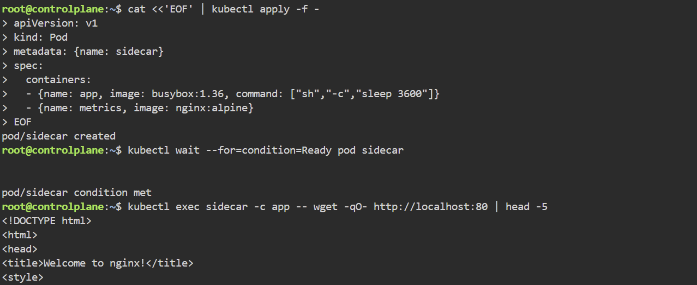
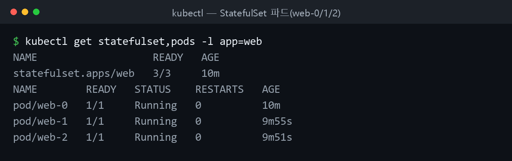
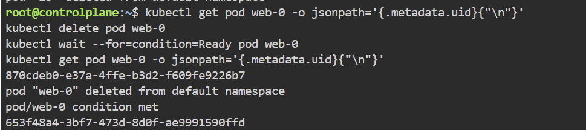
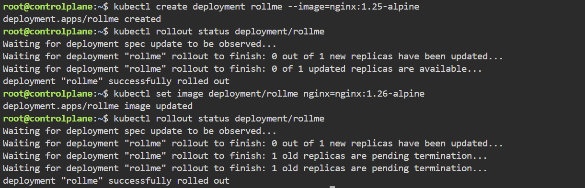

멀티컨테이너 파드 · 스테이트풀셋 · 롤아웃/롤백
멀티컨테이너 파드 → 초기화 컨테이너·사이드카 → 스테이트풀셋 → 롤아웃/롤백 순서로 실습한다.
멀티컨테이너 파드 — 볼륨 공유
같은 파드의 컨테이너는 같은 IP를 가지며 localhost로 통신하고 볼륨을 공유한다. sleep은 쓰기(/data-rw), file-reader는 읽기 전용(/data-ro)으로 같은 emptyDir를 마운트한 정의:
spec:
containers:
- name: sleep
image: kiamol/ch03-sleep
volumeMounts:
- name: data
mountPath: /data-rw # 볼륨을 쓰기 가능으로 마운트
- name: file-reader # 컨테이너는 각기 다른 이름을 갖는다
image: kiamol/ch03-sleep # 하지만 이미지는 같을 수도 있다
volumeMounts:
- name: data
mountPath: /data-ro
readOnly: true # 같은 볼륨을 읽기 전용으로 마운트
volumes:
- name: data # 같은 볼륨을 여러 컨테이너에 마운트
emptyDir: {}
cd ch07
kubectl apply -f sleep/sleep-with-file-reader.yaml # 두 컨테이너 파드 배치
kubectl get pod -l app=sleep -o wide # 파드 상세
kubectl get pod -l app=sleep -o jsonpath='{.items[0].status.containerStatuses[*].name}' # 컨테이너 이름
kubectl exec deploy/sleep -c sleep -- sh -c 'echo ${HOSTNAME} > /data-rw/hostname.txt' # 한쪽에서 기록
kubectl exec deploy/sleep -c file-reader -- cat /data-ro/hostname.txt # 다른 쪽에서 읽기
kubectl exec deploy/sleep -c file-reader -- sh -c 'echo more >> /data-ro/hostname.txt' # 읽기 전용 → 오류(정상)

▲ 한 파드 안 writer 컨테이너가 emptyDir에 쓴 파일을 reader 컨테이너가 그대로 읽는다 — 같은 파드 내 볼륨 공유.
두 번째 컨테이너를 HTTP 서버로 바꾸면 sleep에서 localhost:8080으로 접근 가능. 외부 노출은 서비스로 처리:
kubectl apply -f sleep/sleep-with-server.yaml # 서버 컨테이너 포함 파드
kubectl exec deploy/sleep -c sleep -- wget -q -O - localhost:8080 # localhost로 서버 호출
kubectl expose -f sleep/sleep-with-server.yaml --type LoadBalancer --port 8020 --target-port 8080 # 서비스 생성
kubectl logs -l app=sleep -c server # 서버 로그
초기화 컨테이너와 사이드카
일반 컨테이너는 병렬 실행되고 모두 Ready여야 파드가 준비된다. 초기화 컨테이너는 애플리케이션보다 먼저, 정의 순서대로 실행돼 공유 볼륨에 데이터를 준비한다.
timecheck에 초기화 컨테이너를 붙여 jq로 appsettings.json을 가공한다:
spec:
initContainers:
- name: init-config
image: kiamol/ch03-sleep # 이 이미지에는 jq 명령이 들어 있다
command: ['sh', '-c', "cat /config-in/appsettings.json | jq --arg APP_ENV \"$APP_ENVIRONMENT\" '.Application.Environment=$APP_ENV' > /config-out/appsettings.json"]
env:
- name: APP_ENVIRONMENT # 모든 컨테이너는 각자의 환경 변수를 갖는다
value: TEST # 이 환경 변수는 파드 안에서 공유되지 않는다
volumeMounts:
- name: config-map # 컨피그맵을 읽어 들이는 볼륨
mountPath: /config-in
- name: config-dir
mountPath: /config-out # 가공된 설정 파일을 기록할 공디렉터리
kubectl apply -f timecheck/timecheck-configMap.yaml -f timecheck/timecheck-with-config.yaml # 컨피그맵+디플로이먼트
kubectl wait --for=condition=ContainersReady pod -l app=timecheck,version=v2 # 준비 대기
kubectl exec deploy/timecheck -- cat /config/appsettings.json # 가공된 설정 확인
사이드카로 로그 수집기, 헬스체크 API(:8080), 메트릭 API(:8081)를 붙여 표준 관리 API를 제공한다. 헬스체크 사이드카는 nc로 고정 응답을 반환:
- name: healthz # 헬스체크 API를 제공하는 사이드카
image: kiamol/ch03-sleep
command: ['sh', '-c', "while true; do echo -e 'HTTP/1.1 200 OK\nContent-Type: application/json\nContent-Length: 17\n\n{\"status\": \"OK\"}' | nc -l -p 8080; done"]
ports:
- containerPort: 8080 # 파드의 8080번 포트를 사용한다
kubectl apply -f timecheck/timecheck-with-logging.yaml # 사이드카 추가 배치
kubectl logs -l app=timecheck -c logger # 로깅 사이드카 로그
kubectl exec deploy/sleep -c sleep -- wget -q -O - http://timecheck:8080 # 헬스체크 API
kubectl exec deploy/sleep -c sleep -- wget -q -O - http://timecheck:8081 # 메트릭 API

▲ 같은 파드의 app 컨테이너가
localhost:80 으로 사이드카(nginx)에 접근한다 — 한 파드 안 컨테이너는 네트워크를 공유한다.
스테이트풀셋
스테이트풀셋은 todo-db-0, todo-db-1처럼 규칙적 이름을 0번부터 순서대로 부여한다. 데이터베이스 같은 클러스터형 상태 애플리케이션 모델링에 쓴다.
cd ch08
kubectl apply -f todo-list/db/ # 스테이트풀셋·서비스·비밀값 배치
kubectl get statefulset todo-db # 스테이트풀셋 확인
kubectl get pods -l app=todo-db # 규칙적 파드 이름 확인

▲ StatefulSet으로 만든 파드는 web-0·web-1·web-2 처럼 순서가 있는 이름을 갖고 각각 Running 상태다.
파드가 삭제되면 같은 이름의 대체 파드를 만들되 uid는 새로 부여한다:
kubectl get pod todo-db-0 -o jsonpath='{.metadata.uid}' # 삭제 전 uid
kubectl delete pod todo-db-0 # 수동 삭제
kubectl get pod todo-db-0 -o jsonpath='{.metadata.uid}' # 대체 파드 uid(변경됨)

▲ StatefulSet의 web-0를 삭제하면 같은 이름으로 다시 생성되지만 uid는 새로 부여된다(870cdeb0… → 653f48a4…).
파드별 고유 DNS가 필요하면 clusterIP: None인 헤드리스 서비스를 쓴다. IP 대신 todo-db-0.todo-db.default.svc.cluster.local 도메인을 노출한다:
apiVersion: v1
kind: Service
metadata:
name: todo-db
spec:
selector:
app: todo-db
clusterIP: None # 이 서비스에는 IP 주소가 부여되지 않는다 (헤드리스)
ports:
# 이 뒤로 포트 설정
kubectl get svc todo-db # CLUSTER-IP가 None
kubectl exec deploy/sleep -- sh -c 'nslookup todo-db-0.todo-db.default.svc.cluster.local' # 파드 도메인 조회
kubectl scale --replicas=3 statefulset/todo-db # 레플리카 추가
파드마다 별도 스토리지를 주려면 volumeClaimTemplates를 쓴다. 파드별 PVC가 동적 생성되고, 파드가 대체돼도 기존 PVC가 다시 연결된다:
volumeClaimTemplates:
- metadata:
name: data # 파드 볼륨 마운트의 이름
spec: # 일반적인 영구볼륨클레임의 정의
accessModes:
- ReadWriteOnce
resources:
requests:
storage: 5Mi
kubectl apply -f sleep/sleep-with-pvc.yaml # 볼륨 클레임 템플릿 스테이트풀셋
kubectl get pvc # 파드별 PVC 확인
kubectl exec sleep-with-pvc-0 -- sh -c 'echo Pod 0 > /data/pod.txt' # 파드 0에 기록
kubectl delete pod sleep-with-pvc-0 # 수동 삭제
kubectl exec sleep-with-pvc-0 -- cat /data/pod.txt # 대체 파드가 데이터 유지
get pvc — 파드별 PVC와 데이터 유지
(실습 화면 캡처)
롤아웃과 롤백
디플로이먼트는 기존 레플리카셋을 줄이고 새 레플리카셋을 늘려 무중단 업데이트한다. 파드 정의가 바뀔 때만 롤아웃이 적용된다(스케일 변경은 제외).
cd ch09
kubectl apply -f vweb/ # 웹 애플리케이션 배치
kubectl set image deployment/vweb web=kiamol/ch09-vweb:v2 # 이미지 변경 → 롤아웃
kubectl rollout history deploy/vweb # 롤아웃 히스토리
--record로 리비전을 추적하고, kubectl rollout undo로 롤백한다. --dry-run으로 미리 보고 --to-revision으로 특정 리비전을 지정한다:
kubectl apply -f vweb/update/vweb-v11.yaml --record # record 옵션으로 변경
kubectl rollout history deploy/vweb # 히스토리 확인
kubectl rollout undo deploy/vweb --dry-run # 롤백 예측(미적용)
kubectl rollout undo deploy/vweb --to-revision=2 # 리비전 2로 롤백

▲ 디플로이먼트 이미지를 nginx 1.25 → 1.26 으로 바꾸면 롤링 업데이트로 파드가 무중단 교체된다.
업데이트 전략 — RollingUpdate vs Recreate
기본값 RollingUpdate는 파드를 점진 교체해 무중단을 유지한다. Recreate는 기존 파드를 0까지 줄인 뒤 새 파드를 올려 다운타임이 생긴다.
spec:
replicas: 3
strategy: # 업데이트 전략
type: Recreate # 기본값(RollingUpdate) 대신 Recreate 사용
잘못된 이미지(v3)로 업데이트하면 Recreate는 앱 전체가 중단되고, RollingUpdate는 새 파드가 준비되지 않으면 기존 파드를 유지해 앱이 살아 있다.
# Recreate 전략 + 잘못된 이미지 → 앱 전체 중단
kubectl apply -f vweb-strategies/vweb-recreate-v3.yaml
kubectl get pods -l app=vweb
curl $(cat url.txt) -UseBasicParsing # 실패
# RollingUpdate 전략 + 잘못된 이미지 → 일부만 영향, 앱은 유지
kubectl apply -f vweb-strategies/vweb-rollingUpdate-v3.yaml
kubectl get rs -l app=vweb
curl $(cat url.txt) -UseBasicParsing # 여전히 응답
Recreate 중단 vs RollingUpdate 유지
(실습 화면 캡처)
막혔던 점
- 멀티컨테이너 파드에서
kubectl logs/exec오류 →-c로 컨테이너 지정. - 읽기 전용 볼륨 쓰기 실패 → 정상 동작. 쓰기는 쓰기 가능 마운트 컨테이너에서.
- 스테이트풀셋 파드가 천천히 생성 → 순서대로 만드는 정상 동작.
kubectl wait --for=condition=Ready로 대기. - 헤드리스 서비스 CLUSTER-IP가
None→ 정상. 파드 도메인으로 접근. - 스케일만 바꿔 롤백 불가 → 파드 정의 변경(이미지 교체 등)이 있어야 리비전이 쌓임.